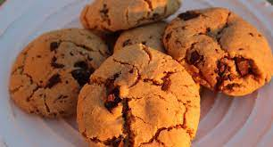

Peanut Butter Chocolate Chip Cookies

Description:
Delicious American style chocolate chip cookies together with peanut butter... what more do you need?
Ps. These are easy to make vegan as well. Just replace butter, milk and chocolate with
vegan options.
Ingredients:
- 100g sugar
- 100g brown sugar
- 1 teaspoon vanilla sugar
- 1/2 teaspoon salt
- 90g butter
- 75ml milk
- 50ml peanut butter
- 350ml flour
- 1/2 teaspoon baking soda
- 1/2 teaspoon baking powder
- 100g dark chocolate
Steps:
- Mix together flour, baking powder and baking soda
- Gently mix sugars, salt and butter in another bowl
- Add in milk and peanut butter
- Add flour and mix gently
- Finally add in diced chocolate
- Let dough cool in freezer for 30 minutes or fridge for 1-2 hours
- Make little balls and set the on a baking tray. Make sure to leave some space between them.
- Bake in 180 degrees Celsius for 12-15 minutes
- Let cool
- Enjoy!